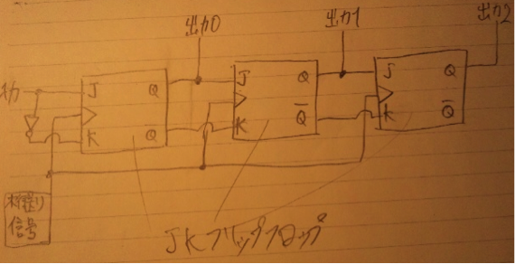

(1,1,1,1)
(1,1,2),(1,2,1),(2,1,1)
(1,3),(3,1)
(2,2)
より、a4 = 7
a_n = 1,2,4,7,11…
数列 a_n に対して b_n = a_(n+1) - a_n とすると、
階差数列 b_n = Σ(n,k=1)k
よってa_n = 1 + Σ(n,k=1)k = 1/2 (n-1){(n-1)+1}= 1/2 (n^2-n+2)
(2)の漸化式を利用してa_nを求める方法であれば計算量はnに関わらず数回の単純な四則演算のみなので、O(1)であることは明らかである。
全列挙する場合、木で表すとすれば木の最大の高さはnまで1点ずつ加算していく場合であるので、nとなる。1,2,3の３通りの加算方法があるので、完全3分木のノード数を考えると、初項１、公比３の等比数列の第n項までの和になるので、ノード数は1/2 (3^n-1)個となる。1ノードの探索で定数時間c掛かるとすれば、計算時間は1/2 (3^n-1)c。
よってO(3^n )となる。
35%
ページフォールト時に目的のページと、そのページにアドレスが連続するページを余分に読むこむデマンドプリフェッチをすれば、空間的局所性によりアクセスされるページに近いページは近いうちにアクセスされる確率が高いことが分かっているので、ヒット率を上げる効果が期待出来る。よって、時間の掛かるページフォールト率が下がるので、アクセス時間が向上する。
また、プロセッサと主記憶に、主記憶よりさらに高速かつ小容量のキャッシュを数個設置することにより、ミスペナルティを緩和し、アクセス時間の向上が期待出来る。
今までは基本的にCPUの動作周波数を向上させて高速化させてきたが、高クロック化は消費電力の増加、それによる熱暴走の問題が無視出来ないほどに大きくなった。さらにプロセッサの小型化によるリーク電流や、電子の物理的な速さの限界により、単一コアでの性能向上が非常に困難になった。そこで代わりに消費電力と発熱を抑え、スループットの向上により高速化が望めるマルチコアに方針を転換した。
機械語レベルの並列実行可能な命令の検出、それぞれのコアに命令を配分する機構。マルチコアで最も大切なのは、いかに並列性を検出し、効率よくそれぞれのコアに仕事を割り振るかである。
複数のプロセスが互いに相手の占有している資源の開放を待ち、処理が停止してしまうこと。
現在実行中のプロセスから、強制的に割り込みに応じた処理に実行権を移すこと。
単一の資源について、複数のプロセスが同時期にアクセスすると破綻をきたす可能性がある部分。クリティカルセクション中は、排他制御によってプリエンプションが起きないようにする必要がある。
あるプログラムがOSの機能を使用する場合に呼び出す命令。プログラミングにおいてはOS機能の関数呼び出しによって実現されている。
FIFO
| 枠１ | 1 | 1 | 1 | 1 | 4 | 4 | 4 | 3 | 3 | 3 | 3 |
| 枠２ | 2 | 2 | 2 | 2 | 1 | 1 | 1 | 4 | 4 | 4 | |
| 枠３ | 3 | 3 | 3 | 3 | 2 | 2 | 2 | 2 | 2 | ||
| ページフォールト | ● | ● | ● | ● | ● | ● | ● | ● | |||
| 参照ページ | 1 | 2 | 3 | 2 | 4 | 1 | 2 | 3 | 4 | 3 | 2 |
ページフォールト計：８回
| 枠１(最近参照) | 1 | 2 | 3 | 2 | 4 | 1 | 2 | 3 | 4 | 3 | 2 |
| 枠２ | 1 | 2 | 3 | 2 | 4 | 1 | 2 | 3 | 4 | 3 | |
| 枠３(昔参照) | 1 | 1 | 3 | 2 | 4 | 1 | 2 | 2 | 4 | ||
| ページフォールト | ● | ● | ● | ● | ● | ● | ● | ||||
| 参照ページ | 1 | 2 | 3 | 2 | 4 | 1 | 2 | 3 | 4 | 3 | 2 |
ページフォールト計：７回
TCP：Transmission Control Protocol
UDP：User Datagram Protocol
・信頼性
TCPは再送制御や誤り訂正機能を持ち、信頼性ある通信を行うのに対し、UDPはそういった機能を省いているために信頼性は低い。
・速度
TCPは信頼性確保のために冗長的な処理が多く、速度は遅い。UDPはそういった冗長的な処理を省いているため、比較的速い。
・通信形態
TCPは１対１通信であるユニキャストのみサポート。
UDPはユニキャストに加え、１対多であるマルチキャストやブロードキャストをサポート。
・輻輳制御
TCPは輻輳制御機能を持ち、UDPは持たない。
UDPはネットワークに負担を掛ける可能性が高い。
しかしリアルタイム性は高い。
・コネクション
TCPはコネクション方式。UDPはコネクションレス方式。
・速度
(2)で挙げた通り、UDPは信頼性を犠牲にして高速な通信速度を実現している。これを生かし、リアルタイム性が重視される映像のストリーミングや、IP電話などに利用される。
・マルチキャスト、ブロードキャスト
１対多の通信を実現するためにはUDPが必要。
・DNS
DNSで使用するデータは極小であり、セグメントに分割する必要はない。少なくない要求に対して一々スリーハンドシェイクをしていたのでは無駄が非常に多い。そこでUDPの出番。
？？？
要求したパケットが正常に受信し、次に欲しいパケットの番号を送信側に伝えるため又は、受信に失敗したパケットの番号を伝えることで、再送を促す信号。コネクション確立、確実に受信出来たかの確認など、信頼性ある通信には必要。
データがパケットに分割されている場合、受信側が正しく分割されたパケットを結合するためには、パケットそれぞれに順序情報が必須。その順序を示すのがシーケンス番号。また、受信側はパケットの欠落も知ることが可能。信頼性ある通信に必要。
バッファが無ければ、１パケット送信する度に、相手のACKを待つ必要があり、非常に非効率。そこで相手のバッファ容量が許す限り、一度に複数のパケットを送信し、受信側は処理が追いつかない場合に一度バッファに受信パケットを溜めておくことによって、高速性を実現。送信バッファは、送信時にアプリケーションから受け取った際にデータを一時保管するために使用。
・スリーハンドシェイク
SYN送信→ACK&SYN受信 ここまで100msec →ACK送信
よって100msec
・1MBファイルの送信
1MB = 2^20 B
64kB = 2^16 B
→2^20/2^16 = 16個のパケットに分けて送信する必要がある。
※1パケットで64kBのデータが送信出来ると仮定
100msec * 16 = 1600 msec
・コネクションを切る処理
100msec
以上よりおおよそ1800msec
ド・モルガンの法則により、
¬F(x,y) = (¬x+y)*(x+¬y)
¬F(A,B,C,D,E) = (¬A+B)*¬C+D¬E
¬F(x,y,z) =¬ (¬xy¬z)+ (xz)+(¬(xy))
複数のフリップフロップをカスケード接続にしたもので、記憶内容がその回路を一つずつ一方向に移動するようにしたもの。

右方向シフトレジスタ。
桁送り信号がアサートされる度に記憶内容が右シフトしていく。
ネットワーク等でデータを送受信する場合に用いられる。ネットワークで使用する回線は通常１bitずつしかデータを送ることが出来ないため、受信側は1bitシフトレジスタに受信する度にシフトし、例えば8bit毎にフリップフロップの全てのデータを取り出せば、1bitずつ受信したデータを8bitに変換することが可能。